FIFO Buffer: Functional Model
Contents
Introduction
This demo shows how to build an asynchronous first in, first out (FIFO) buffer and use it to model data transfer between two processors. The demo shows you to explore the effect of buffer space limitations on the data transfer. The demo also shows how to use the buffer to regulate data passing between processors operating at different clock speeds. This demo models the functional behavior at an abstract level which is useful in sizing the buffer before implementing in hardware.
The modeling of the buffer with more architectural details is shown in FIFO Buffer: Architectural Model.
Overview of FIFO Buffer Model
A FIFO buffer is a hardware component that stores data as a part of data exchange between processors. The FIFO Queue block enables simulation of such buffers in software. Each processor is driven by a clock. Because each clock synchronizes the processor hardware, the clock appears synchronous to that processor. However, the clocks of two or more processors are typically not synchronous with each other.
This model consists of two processor subsystems, Processor A and Processor B, with their corresponding clocks. The processor subsystems have entity connections to the FIFO Queue block. These entity connections and the entities that move along them implicitly enforce blocking between blocks. This allows the FIFO Queue block to buffer and regulate the movement of data between Processor A and Processor B.
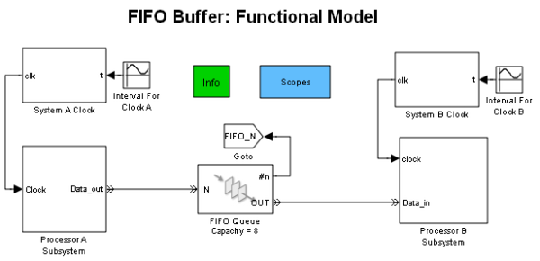The processors' processing is limited to counting and data transfer to simplify the demo description. Processor A increments its state, state A, and forwards the new value to Processor B. Processor B then copies the value to its state, state B.
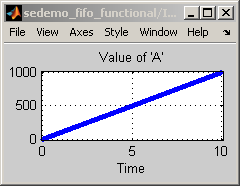 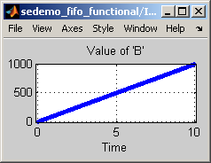Detailed Description of Processors
The Processor A subsystem contains an Event-Based Entity Generator block clocked by the System A Clock. As the entity is generated, it fires the Processor A State subsystem. The subsystem increments state A and updates the attribute of the passing entity. The generated entity then advances to the FIFO Queue block.
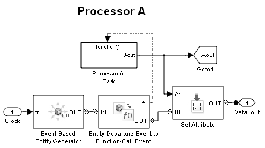The FIFO Queue block is connected to the Processor B subsystem. Inside this subsystem, the Release Gate block is clocked by the System B Clock. When the Release Gate block is opens, the entity, if available, advances from the FIFO Queue block and fires the Processor B State subsystem, which updates state B with the attribute value from the entity.
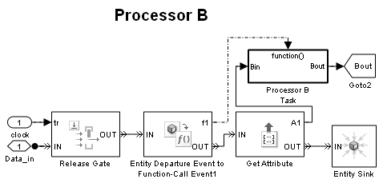The clock generation technique is documented in Asynchronous Clock Domains.
Behavior of the FIFO Buffer Model Capacity Estimation for Drifting Clocks
Setting the Capacity parameter for the FIFO Queue block to 4 and the Allow Blocking parameter for the Event-Based Entity Generator in the Processor A subsystem to 'off' disallows blocking for Processor A and demonstrates whether the buffer size of 4 is sufficient to allow the processors to communicate without Processor A having to pause to permit Processor B to catch up. A buffer capacity of 4 results in a run-time error because the FIFO Queue block is too small. This error causes the simulation to terminate early which results in the incomplete plots.
ans = Error in 'sedemo_fifo_functional/Processor A Subsystem/Event-Based Entity Generator' block. Unable to send entity at time 7.75961 because OUT port is blocked.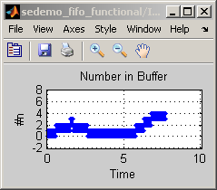 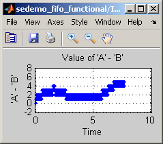
However, setting the Allow Blocking parameter for the Event-Based Entity Generator in the Processor A subsystem to 'on' permits blocking for the entity generator. This allows processor A to respond to blocking by delaying the generation of entities until space is available in the FIFO Queue block. Running the models shows how this setting enables the simulation to continue with delayed delivery of values to Processor B.
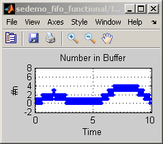With these settings, Processor A increments its state only if an entity can advance to the FIFO Queue block. The delay from Processor A to Processor B varies with the difference between the instantaneous frequency of the clocks used for each processor. This delay is apparent in the plot of 'A' - 'B'.
Setting the capacity of the FIFO Queue block back to 8 and disallowing blocking for the Entity Generator for Processor A by returning the Allow Blocking parameter for the Event-Based Entity Generator in the Processor A Subsystem to 'off' allows the simulation to run to completion. The maximum value in the Number in Buffer plot, 5, is the minimum buffer size required to support communications between the processors.
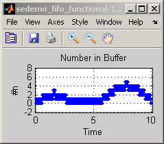 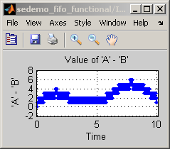Behavior of the FIFO Buffer Model for Different Clock Speeds
Changing the settings so the clock for Processor A runs faster than the clock for Processor B and so there is no variation in clock rate demonstrates that the FIFO Queue's blocking via the entity paths is regulating the rate at which Processor A sends updates to Processor B. The clock speed for Processor A is set to 100 by changing the Bias parameter for the Interval for Clock A block to 0.01 while the drift in the clock rate is eliminated by setting the Amplitude parameter to 0. The clock speed and drifting of Processor B is adjusted similarly.
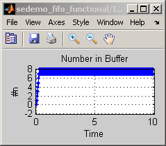 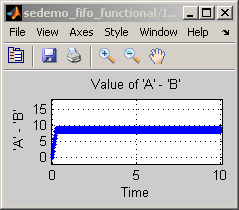The plots show that the number of entities in the FIFO Queue block rises quickly to the capacity of the buffer, 8, and then remains at that level until the end of the simulation. This indicates that Processor A has filled the FIFO Queue block. When the FIFO Queue block reaches capacity, Processor A cannot send a new entity to the FIFO Queue block until Processor B accepts an entity from the FIFO Queue block.
Changing the settings so the clock for Processor A is runs slower than the clock for Processor B demonstrates the FIFO Queue block's ability to fulfill requests from Processor B by either requesting an entity from the FIFO Queue block and, if necessary, waiting until an entity is available from Processor A.
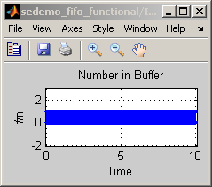 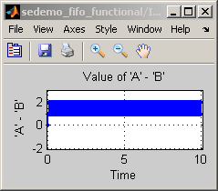The plots show that the number of entities in the FIFO Queue block alternates between 1 and 0 showing that each entity waits in the FIFO Queue block for a short period before advancing to Processor B.